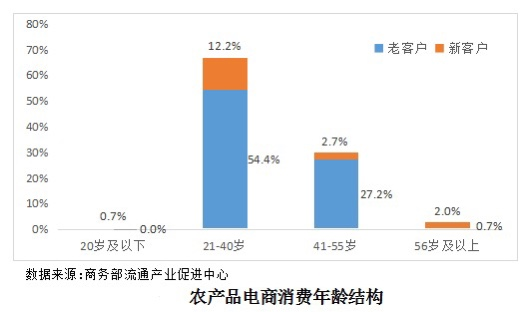
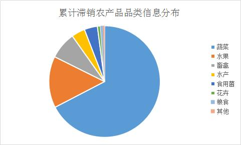

受疫情影响，一季度我国农产品贸易总额增幅有所收窄。从出口看，我国农产品出口下行压力较大。疫情初期，人员延迟复工、进口国限制措施等因素叠加，农产品出口延期或订单减少，对果蔬、水产品等影响较大；随着疫情全球蔓延，国际市场需求总体萎缩，对欧盟、美国等出口下降明显。但同时，随着中国—东盟自贸区升级《议定书》全面生效，对东盟农产品出口呈现逆势增长。一季度进口肉类217.4万吨，同比增长85.6%。其中，进口猪肉95.1万吨，增长1.7倍，进口牛肉51.3万吨，增长64.9%。随着中美第一阶段经贸协议逐步落地，大豆、猪肉等自美进口增长迅速。
⽣鲜电 商渠道消费强劲。⾯对疫情，⼀些⼤中型电商企业 快速响应，开辟助农销售绿⾊通道，在⼀定程度上 缓解农产品滞销难题，为⾃身带来较⼤业务量增 ⻓。据统计，我国⽣鲜电商⽇活跃⽤户数量春节前 不到800万个，春节后迅速突破1200万个。⽣鲜电 商渠道销售占⽐增⾄33.1%，提⾼17.6个百分点。 从⼈群分布看，中⻘年⼈是电商消费的主⼒军。21—40岁的消费者占⽐66.6%，41—55岁占⽐29.9%。其中，⾸次通过电商渠道购买农产品的消费者占⽐17.7%，新客户主要源⾃21—40岁年龄区间，40—55岁⼈群存在较⼤增⻓潜⼒。从消费品类看，电商渠道消费覆盖农产品全品类，⽔果、蔬菜、粮油消费较多，⾁类、禽蛋和⽜奶次之，⽔产品消费相对较少。此外，在线销售需打通采摘、分拣、包装、物流链条环节才能实现最终消费，由于消费者对电商渠道的⽣鲜农产品运输时效和产品质量提出更⾼要求，具备⾃建物流体系、选品和仓储配送能⼒的电商企业在此次疫情中表现更佳

社区社群集中消费激增，社区统⼀采购配送等模式逐步普及。社区菜店在各渠道销售占⽐增速最⾼，成为仅次于超市的重要渠道，占⽐达41%，较疫情前提⾼19.2个百分点。江苏、⼭东、⿊⻰江、湖北、天津社区菜店消费明显增强，分别提⾼50、47、42、24和23个百分点。社区团购模式得到迅速推⼴，占⽐由2%增⾄11.9%，且推⼴速度与疫情⻛险等级正相关。湖北地区社区团购渠道增⻓最为明显，提⾼47个百分点。武汉市开展农产品直供进社区的蔬菜、⽔产、禽蛋⽣产企业分别达到80家、99家和34家。截⾄4⽉12⽇，武汉全市累计配送团购蔬菜5.9万吨、⽔产品2700吨、鸡蛋4000余吨。北京社区团购渠道占⽐增加较快，提⾼11个百分点，⾼于全国平均⽔平。社区⾃发组织购物群，通过居⺠拼单由社区从批发市场代购⽣鲜农产品，其便利性和实惠性逐步被⼈们接纳。

受疫情影响，农产品需求端发⽣变化，各地机关团体⻝堂、餐饮与节庆活动相关的集体性消费需求明显减弱，但家庭⽇常⽣活消费需求是刚性的。受前期农产品价格结构性上涨、季节性因素和疫情对饮⻝结构影响，家庭消费较疫情发⽣前⼩幅增⻓。疫情期间绝⼤多数居⺠减少了购买农产品次数，但单次消费⾦额有所增加。据调查，七成以上居⺠每周购买农产品频次少于2次，仅2.5%的居⺠每天购买，⽉均购买农产品约9次；单次农产品消费⾦额在85—147元之间，家庭⽉平均消费⾦额约1044元。正常情况下我国居⺠⽉均购买农产品频次约10次，客单价约82元。

根据布瑞克农业大数据与人民日报三农频道联合发布的"全国农产品滞销大数据及供需对接平台"所采集到的数据显示，截至目前，平台已累计获取全国各地的农产品滞销/急售信息6379条，总重量约729万吨（部分禽畜类、花卉类的数量信息未折算）。从区域分析来看，目前广西、甘肃、广东、江苏、河南、山东、云南农产品滞销情况严重。 从品种分析来看：蔬菜、柑橘、香蕉、苹果、梨、鸡蛋、肉鸡、水产品滞销严重。品种滞销与产区存在显著相关性，冬季农业生产活跃地区农产品滞销较为严重。华南地区滞销农产品主要是应季水果、冬季大田蔬菜，淡水及海水鱼类，黄羽肉鸡；江苏主要是水产，黄羽肉鸡；鸡蛋及大棚蔬菜全国各主产区均出现严重或较为严重滞销；苹果、梨存储水果等滞销集中甘肃、山东等产区。从滞销品种来看，蔬菜类滞销信息最多，其次是水果、畜禽等。从滞销农产品的重量来看，蔬菜、水果滞销量分别达到430万吨、250万吨。

一是从舆情监测来看，农产品滞销的热度在下降，一定程度上反映了农产品滞销情况逐步缓解。对农产品滞销种/养殖户进行了电话回访，从回访结果来看，蔬菜、水果滞销问题有所缓和，开始陆续有收购商进村收购，但部分地区村路堵塞导致产品运不出，原料运不进矛盾仍较为尖锐，近2成种植户反馈滞销问题基本解决，5成左右反馈滞销问题得到部分解决，3成反馈滞销问题未出现实际性好转。肉禽方面大部分养殖户反馈滞销问题已经缓解，其中广东、浙江肉禽滞销问题已得到解决，活禽价格回升至养殖成本上方，鸡蛋方面滞销问题普遍得到缓解，新产鸡蛋基本能及时销售，春节期间生产鸡蛋虽然价格较大，但开始有收购商大量收购。水产滞销问题当前仍较为严重，除了广东政府出台水产品收储政策，滞销问题有所好转，其他地区水产滞销问题仍较为严峻。水产已经或者即将开始新年度投苗，当季水产滞销时间长必然影响下年度的投苗及生产。
一是尽快摸清农产品滞销总量和当前供销链条的薄弱环节。可统筹利用现有农产品滞销信息平台，依托农村网格化管理模式和信息化手段，分地域分层次摸清农产品滞销底数，厘清目前农产品供销链条的薄弱环节，分类精准施策，有针对性地搭建和修补供销网络。
二是在做好疫情防控工作同时尽快疏通农产品运输 "最后一公里"。近期多部委密集发布农业生产及流通政策，一定程度缓解了农产品运输问题，主干路运输情况明显改善，但基层防疫加码、自我封闭现象仍然突出，"村口"拦阻直接导致大量蔬果无法运出甚至烂在地里。要实事求是做好防控工作，压实农产品运输保障的主体责任，防止封城政策层层加码带来伤农事件。
三是统筹现有平台资源做好农产品供需对接。部分互联网平台公司已自发建立滞销农产品供需信息对接平台，要进一步整合优化现有资源，鼓励互联网平台、物流公司、农产品贸易公司利用技术优势积极参与助农保供。在缓解农产品滞销同时，解决部分地区出现的蔬果供应短缺、价格高涨、种类减少等民生问题。
四是适时让联防联控工作机制发挥更多复工复产保障职能。联防联控工作机制在疫情防控工作中发挥了极其重要的作用，极大提升了防疫工作成效。在下一步复工复产工作中，要继续用好联防联控工作机制，由专门部门牵头摸清农产品供需链条各环节堵点，相关部门协调配合尽快加以解决。
五是对部分耐仓储，且新年度即将展开的品种采用适当补贴或收储。浙江前期启动对本省活禽屠宰补贴政策，随后广东对本省活禽、水产品进行收储，目前来看禽肉价格回升至成本上方，养殖户资金得到流动，开始逐步补栏恢复生产，水产方面滞销情况也有所好转。适当补贴或收储主要是促使产业正常，减少过长时间滞销对产业新年度生产产生严重影响，且收储的产品可以为未来一段时间可能出现阶段性供应紧张提供保障。
六是对部分前期严重滞销且已经影响生产品种做好监测，防止市场过度囤积，导致价格阶段性大幅飙升。肉禽1月份至今补栏量一直维持极低水平，部分地区补栏量不足正常水平的2成。根据肉鸡生长的特点，1-2月份极低补栏量很可能导致4-5月鸡肉供应阶段性出现断档，而在猪肉供应偏紧大环境下，做好相应的监测和舆情引导，防止市场囤积，出现价格大幅上涨。